Nelder-Mead Simplex
An optimization algorithm that is widely used because it is very robust is the Nelder-Mean simplex algorithm. To minimize the function 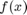, where 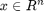, and starting from a set of points 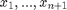, proceed along these steps:
Contents
1. Order points according to the values at the vertices
2. Calculate the centroid of all points except
3. Reflection
Compute reflected point  with
with  . If the reflected point is better than the second worst, but not better than the best, i.e. 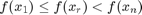, then obtain a new simplex by replacing the worst point with the reflected point 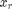 , and go to step 1.
. If the reflected point is better than the second worst, but not better than the best, i.e. 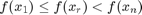, then obtain a new simplex by replacing the worst point with the reflected point 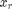 , and go to step 1.
4. Expansion
If the reflected point is the best point so far, 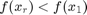, then compute the expanded point  with
with  . If the expanded point is better than the reflected point, 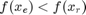, then obtain a new simplex by replacing the worst point with the expanded point 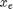 and go to step 1; else obtain a new simplex by replacing the worst point with the reflected point and go to step 1.
. If the expanded point is better than the reflected point, 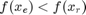, then obtain a new simplex by replacing the worst point with the expanded point 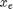 and go to step 1; else obtain a new simplex by replacing the worst point with the reflected point and go to step 1.
5. Contraction
Here it is certain that 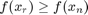 . (Note that 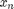 is second or "next" to highest.) Compute contracted point
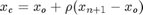 with  . If the contracted point is better than the worst point, i.e. 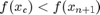, then obtain a new simplex by replacing the worst point with the contracted point 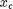 and go to step 1;
. If the contracted point is better than the worst point, i.e. 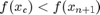, then obtain a new simplex by replacing the worst point with the contracted point 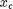 and go to step 1;
6. Shrink
Replace all points except the best (  ) with 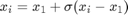 and go to step 1. Note:
) with 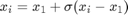 and go to step 1. Note:  ,
,  ,
,  , and are respectively the reflection, expansion, contraction and shrink coefficients. Standard values are 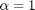,
, and are respectively the reflection, expansion, contraction and shrink coefficients. Standard values are 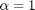,  , 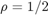 and 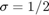.
, 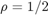 and 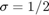.
For the reflection, since is the vertex with the higher associated value among the vertices, we can expect to find a lower value at the reflection of in the opposite face formed by all vertices 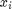 except .
For the expansion, if the reflection point is the new minimum along the vertices, we can expect to find interesting values along the direction from  to .
to .
Concerning the contraction, if 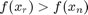, we can expect that a better value will be inside the simplex formed by all the vertices .
Finally, the shrink handles the rare case that contracting away from the largest point increases 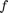, something that cannot happen sufficiently close to a non-singular minimum. In that case we contract towards the lowest point in the expectation of finding a simpler landscape. However, Nash notes that finite-precision arithmetic can sometimes fail to actually shrink the simplex, and implemented a check that the size is actually reduced.
rng(1) nm = NelderMead(@(x)sum(x.^2),randn(2,3)) nm.Solve() nm.Solution()
nm =
-----------------
NelderMead object
-----------------
Objective
---------
@(x)sum(x.^2)
Simplex
-------
-0.84555, -0.75845, -0.64901
-0.57266, -1.1096, 1.1812
CurrentY
--------
1.0429, 1.8065, 1.8164
Contraction
Reflection
Contraction
Contraction
Reflection
Expansion
Reflection
Contraction
Expansion
Reflection
Contraction
Contraction
Reflection
Contraction
Contraction
Contraction
Reflection
Contraction
Contraction
Termination
ans =
0.0043
0.0154
ans =
0.0043
0.0154